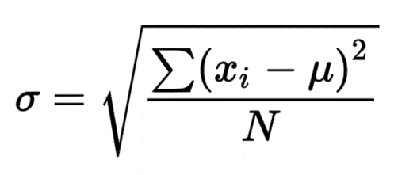
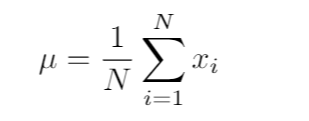

Finding the standard deviation (5 points)
In this problem, given n integers, you are expected to find their standard deviation σ, where the formulas are given as below,
where the number μ is the arithmetic mean of these n numbers.


User will enter a positive integer amount of inputs, and assume at least two inputs are written. In the input taking part, if a 0 (zero) input
is given, it behaves as a "stop code" and stops taking input, which means that our numbers we need to calculate their standard deviation are
only the numbers given as input before writing 0. For example, in the input taking part, if you write 3,5,7,0 consecutively, the the numbers
considered will only be 3,5,7. You can safely assume that all inputs except the stop code are non-zero integers. At the end of your calculations,
the calculated value will have at most 4 digits after the comma (,) sign, which will already be handled.
Depending on your input numbers, you need to print:
Important 1: As it has been stated above, input taking part is handled. The numbers in the input is already put into a variable called numbers_list.
Important 2: As it has been stated above, output printing part is handled. However, you should put the result of your calculation into a variable called std_dev, otherwise output will not be printed properly.
------------------------------------------------------------------
Check the examples for further clarification. Keep in mind that we will be grading your code not just based on these examples, but other cases as well, so try to write code which can handle all possible cases.
Warning: You are not allowed to use any imports and any topics that haven't been covered this semester.
Examples:| INPUT | OUTPUT |
|
3 5 7 0 |
1.633 |
|
1 4 9 16 25 0 |
8.6487 |
|
4 4 4 4 0 |
0.0 |